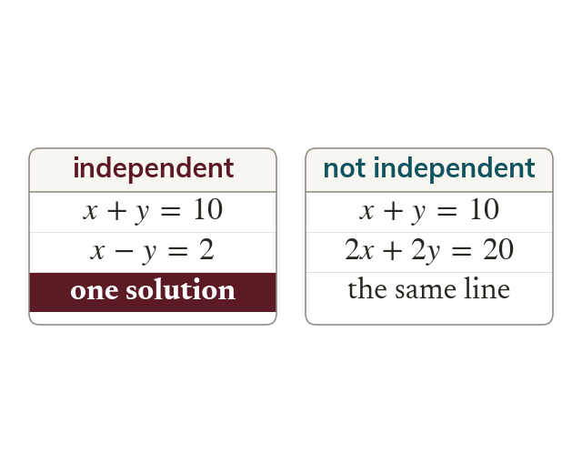

Two independent conditions
Two unknowns need two independent equations. Neither may be a rearrangement or multiple of the other.
Two unknowns need two independent equations, which a worded problem supplies as two separate conditions. Two equations are independent only if neither is a rearrangement or a multiple of the other.